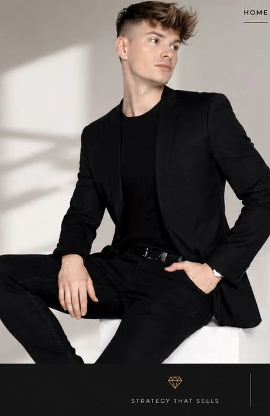

Elegant visual direction without cheesy “VIP” clichés.

Luxury-led positioning
Social media that sells
Boutique social marketing agency
We don’t chase attention.
We make brands impossible to ignore.
Strategy, social media, content direction and campaigns for founders, lifestyle brands and premium businesses that want a polished presence — and real business impact.
Positioning
Clear brand image with luxury restraint.
Content
Editorial social content with strategic intent.
Growth
Social systems built to drive inquiries and conversions.
Selected positioning
Social marketing for brands that want to look expensive, feel credible, and convert without sounding desperate.
About
Not a content factory. A boutique growth partner.
Maison Adriano helps ambitious brands show up with clarity, taste and consistency. The focus is simple: build a premium visual presence, refine the message, and make social media support real business goals.
Best fit: founders, personal brands, beauty, hospitality, real estate, design-led businesses and premium service providers.
Beautiful is nice. Useful, memorable and sellable is better.
Hands-on partnership instead of another agency conveyor belt.
Services
Signature offers
Built for brands that need strategy, polish and consistency — not random posting with motivational captions stapled on top.
01
Social Media Strategy
Positioning, audience logic, messaging pillars, content themes, channel priorities and growth direction.
- Brand positioning map
- Content architecture
- Channel recommendations
02
Content Direction & Planning
Editorial content plans, campaign concepts, post hooks, visual direction and rollout calendars that actually make sense.
- Monthly content plan
- Creative direction
- Launch / campaign concepts
03
Brand Presence Refresh
Audit and refine your social bio, profile presence, visual system, website messaging and overall first impression.
- Instagram / LinkedIn audit
- Visual consistency cleanup
- Messaging refinement
04
Paid Social Campaign Support
Creative input, landing-page angle, offer framing and campaign thinking for ads that feel on-brand.
- Offer framing
- Creative briefing
- Funnel alignment
Results focus
Presence is only useful when it moves the business.
Good social marketing should improve perceived value, message clarity and the quality of incoming inquiries. That means cleaner positioning, stronger content systems and campaigns designed around outcomes — not vanity metrics theatre.
Hospitality brand refresh
Elevated social presence for a premium venue concept.
Refined positioning, visual direction and launch content structure to make the brand feel more premium and conversion-ready.
Founder-led personal brand
Clearer thought leadership without sounding like a LinkedIn parody.
Rebuilt message pillars, profile structure and content topics to improve authority, relevance and lead quality.
Luxury service provider
More coherent content and a stronger premium impression.
Tightened visuals, offer communication and conversion pathways across social touchpoints and website messaging.
Process
How collaboration works
Discovery
We align on the brand, audience, offer, goals and where the current presence falls flat.
Strategy & direction
You get a clear plan covering messaging, content logic, visual direction and channel focus.
Rollout
We shape assets, content structure, campaigns or refreshes depending on the selected scope.
Refinement
We review what performs, tighten weak spots, and keep the brand presentation coherent.
Client feedback
What clients want to feel
“Finally, our social presence matched the quality of the service itself. It looked sharper, felt more premium, and inquiries became more relevant.”— Premium service founder
“The strategy gave us structure. No more random posting, no more guesswork — just content that actually supported the business.”— Lifestyle brand owner
FAQ
Short answers, because nobody enjoys vague agency waffle
Who is this best for?
Founders, personal brands and premium businesses that care about image, clarity and conversion — especially if the current presence feels inconsistent or underpowered.
Do you create content too?
The core focus is strategy and direction, but the scope can include planning, creative guidance and content structure. You can plug in your own team or external production.
Can this work for a personal brand?
Yes. Especially if the goal is premium positioning, stronger authority, better content pillars and a more coherent public image.
What if I only need a strategy, not ongoing work?
That is completely fine. Strategy-only engagements are a clean way to get clarity before building or scaling execution.
Contact
Ready to make the brand look as good as the ambition behind it?
Use the form or swap in direct contact details. Since this runs on GitHub Pages, the form is wired for Formspree by default — just replace the endpoint.